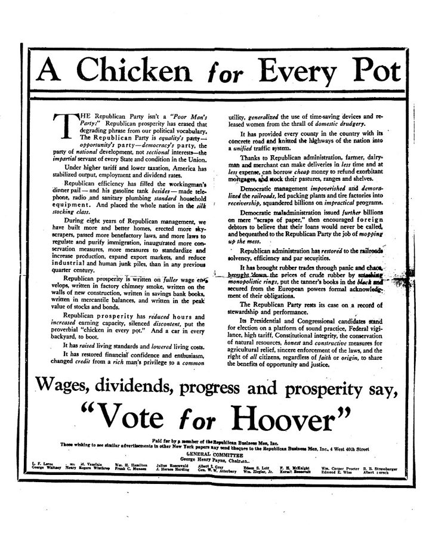

hack together
… quickly hacked together an app called …
匆匆拼凑出来
程序员熟悉的 hack：不求漂亮，先让它跑起来。
人招齐了，事情却推不动：这一章要回答经理怎样带着一群人把事做成。作者从 Instagram 由一个没什么人签到的应用转身讲起，接着是上司在她写的愿景下划的一道线、Facebook 简陋的照片功能靠一个「圈人」赢过 Flickr、她自己拖了一年的书稿、不做「踩」按钮的决定，最后是她改了三版的周报。读的时候抓两条线：目标要具体到做没做到一看就知道；计划和流程都是拿来一版版改的。这是全书清单最密的一章，适合对着自己团队手上的事读。
上一章讲招人，把对的人请进门。这一章转到第 1 章说的第三类事：流程，也就是人齐了以后，大家用什么办法一起把事做成。作者在这里讲愿景、计划、执行和复盘，不讲具体的项目管理工具。她在本章末尾说，周报那样的小流程会随团队变大而变，下一章就讲团队长大以后怎么带。
目标说了，人也齐了，为什么事情还是推不动？
读的时候带着这几个问题。不用先找答案，读完回来对照「检查一下理解」。
这一章的每一节一条，按原书顺序。粗体是本站给的节名，后面是档和英文词数；下面一行是原书小标题、纸书页码和这一节开头几个英文词；再下面是译本的小標題和开头几个字，在译本电子书里搜它就能跳过去。每节标了档：「先读」是这一章的骨架，「有空」例子更多、讲得更细，跳过不丢线。读完打个勾。
先把这一章用到、作者默认你懂的几个概念讲一遍。讲的是概念本身和它在管理界的来历，作者拿它推出什么，读原书时自己看。
OKR 是一种写目标的格式：一条目标（O）说想去哪里，多是一句定性的话；下面挂三五条关键结果（KR），每条都能量，到期一看就知道做到没有。它起源于英特尔，Andy Grove 在那里推行；当年在英特尔当工程师的 John Doerr 1999 年把它介绍给刚拿了他投资的 Google，2018 年又写了《Measure What Matters》。后来国内不少互联网公司也用起来。
容易混的是 KPI：KPI 多用于考核，常和奖金挂钩；OKR 的本意是让大家对齐方向，推行它的公司常说不要直接拿它定奖金。书里没有 OKR 这个词，是本站拿来对照的：作者说的「具体的愿景」，像 OKR 里的目标加上一条最重要的关键结果，既要一听就懂，又要做没做到一目了然。
在这一章：§1 开头作者的 Groups 愿景从「帮人连接」改成「让十亿人找到有意义的社群」；§2 末尾她提醒，衡量进度的指标不等于目标本身。
借的是投资里「鸡蛋不放一个篮子」的道理：按见效的快慢和风险的大小，把人和钱分到几类项目上。管理界常见两种说法。一是麦肯锡的几位顾问 1999 年在《增长炼金术》（The Alchemy of Growth）里提出的「三层面」：第一层守住现有的核心业务，第二层培育正在长起来的业务，第三层给将来的可能播种。二是 Nagji 和 Tuff 2012 年在《哈佛商业评论》上给创新投入定的基准 70/20/10：七成改进核心，两成做相邻的新东西，一成押在颠覆性的尝试上。
比例没有标准答案。押多少在长期上，要看团队有多少余量，以及长期的事落空时输不输得起。
在这一章：§2 小小标题 Take a Portfolio Approach，回答她最常被问的一个问题：眼前的事都忙不完，哪来时间做长远的事。
三个英文词说的是一类事：事后把相关的人叫到一起，回看发生了什么。debrief 原是军队和航空的说法，执行完任务回来汇报；retrospective 是敏捷开发的固定环节，每个迭代结束开一次；postmortem 本义是验尸，互联网公司多指线上事故以后的复盘文档。美军推行多年的「行动后复盘」（AAR）只问四件事：原本打算怎样，实际发生了什么，为什么不一样，下次怎么做。
做得好不好，关键在对事不对人。Norm Kerth 2001 年的《Project Retrospectives》给复盘定了一条「最高准则」：不管查出什么，都相信每个人在当时的信息和处境下已经尽了力。后来 Etsy、Google 等公司推广的「无指责复盘」（blameless postmortem）是同一个思路。中文的「复盘」本是围棋说法：下完把棋重摆一遍。
在这一章：§3 作者说它是改进流程最有用的工具之一，讲了怎么开、怎么措辞。它要的安全环境，见第 6 章的心理安全感。
以后带人碰到这些事，从这里查。每张卡先说动手前要想清楚什么，再用本站的话转述作者的办法（不照抄原书的清单），然后是书外的补充和最容易犯的错，最后指回书里讲它的那一节和纸书页码。全书的情境卡汇总在情境卡。
书里：Focus on Doing a Few Things Well，纸书 p.196–198；关键路径见 p.202
书里：Define Who Is Responsible for What，纸书 p.199–200；清单里的 who 和 by when 在 p.204
书里：Perfect Execution Over Perfect Strategy，纸书 p.202–204
书里：开头 p.192；Good Process Is Ever Evolving，纸书 p.210–213
读英文纸书可能卡住的地方，按原书顺序分节排。灰色斜体是原文里连续的几个词，后面是纸书页码，翻书找得到；标「每个字都认识」的，是每个词都眼熟、合起来意思却变了的，最容易读错。点「记下」收进词本。
按在书里出现的顺序排，标题前是节号。只讲到读懂这一章需要的程度。书里的同事和下属（Rachel、Dan、Sarah……）是普通人，作者多用化名，这里不另作介绍。
Kevin Systrom 2010 年做的 Burbn 是一个签到应用，和当时正火的 Foursquare 很像。他和 Mike Krieger 砍掉签到、只留拍照分享，2010 年 10 月以 Instagram 的名字上线。2012 年 4 月 Facebook 以约 10 亿美元买下它，当时 Instagram 只有十几名员工；2018 年 6 月它宣布月活跃用户过了 10 亿。书里的两个数说的就是这两件事。「pivot」（转向）这个说法，正是题图里那位 Eric Ries 的《精益创业》（2011）推广开的。

1928 年美国大选，共和党的 Herbert Hoover 对民主党的 Al Smith。这则广告由一个支持 Hoover 的商人团体出钱登报，正文说共和党的繁荣让那句老话「锅里有只鸡」成了真，后院还多了辆车。Hoover 本人没说过这句话（书后注释给了出处），可后来对手一直拿它挖苦他：大选一年后股市崩盘，大萧条开始了。这句话常被追溯到 17 世纪初法国国王亨利四世的说法：要让每个农民星期天锅里都有只鸡。
「计划没用，做计划才是一切」是 Eisenhower 1957 年当总统时在一次讲话里说的，他说这是从军队里学来的。帕累托（Vilfredo Pareto）19 世纪末研究财富和收入的分布，发现大头集中在少数人手里，流传最广的说法是「意大利八成的土地在两成人手里」；Richard Koch 的《80/20 法则》1997 年在英国初版，书里写的 1998 年是美国版。帕金森定律出自 C. Northcote Parkinson 1955 年在《经济学人》上的一篇讽刺文章，挖苦英国政府机构：事情没变多，官员却越来越多。说「工作会收缩」的 Mark Horstman，是管理类播客 Manager Tools 的主持人之一。
书里说 Facebook 2005 年推出照片功能。当时照片分享的头号网站是 Flickr：2004 年上线，2005 年被 Yahoo 收购，是摄影爱好者的社区。Facebook 的照片又小又糊，但能「圈人」（tag）：标出照片里的朋友，对方收到通知，照片也出现在对方的主页上。这一招后来成了社交产品的标配，也带来了隐私上的争议：Facebook 后来用人脸识别自动建议该圈谁，2021 年宣布关掉了这套人脸识别系统。
书里说的扩展「赞」按钮，就是 Facebook 的 Reactions。它 2015 年 10 月起在西班牙、爱尔兰等地试用，2016 年 2 月 24 日全球上线：在「赞」之外加了爱心、哈哈、哇、难过、愤怒五种。试用版里还有一个「Yay」，据报道因为不是人人都看得懂，正式版拿掉了。2020 年 4 月疫情期间，Facebook 又加了一个抱着心的笑脸「Care」，用来表达支持。后来这组表情还牵出了一段排序算法的公案，见「今天怎么看」。
书里说 Facebook 早年有人出十亿美元要买下它，一般认为指的是 2006 年 Yahoo 的出价。Zuckerberg 2017 年在哈佛毕业典礼的演讲里讲了这段：几乎所有人都想卖，公司被这件事撕裂了。他在那篇演讲里由此讲到，人需要一种比自己更大的目标感。作者拿它说明：愿景要讲清楚、讲给每个人听。
作者引的那句「不知道要去哪，就可能到了别处」就是典型的 Yogi 式说法。他还有一句更有名的「不到结束，就没结束」（It ain’t over till it’s over）。有些妙语是别人安在他头上的，他自己也开过玩笑说，很多话他其实没说过。
赫拉克利特（Heraclitus）是公元前 500 年前后以弗所的哲学家，著作只剩后人引用的残篇。「人不能两次踏进同一条河」是后人对他的概括，柏拉图就这样转述过，意思是万物都在流动。作者拿它收尾：每次挑战都是一条新的河，过河前看清石头和水流，过完回头想想学到了什么。
对着译本读这一章时，下面这些地方会把人读歪。方框里是译本的原句，在译本电子书里搜它就能找到；灰色斜体是英文原文那一处，后面是纸书页码。只收意思错了、反了、漏了的，措辞上的出入不收。全书的勘误汇总在译本勘误。
… Users weren’t checking in much …
译本：「使用者不常上去」
check in 是到了一个地方在应用里报到。原文说：签到这个本该是核心的功能没什么人用，拍照分享倒留住了人，所以他们砍掉签到、只留照片。读成「用户不常登录」，后面转向的理由就对不上了。
… describe what’s going to be different …
译本：「沒說出這東西到底哪裡與眾不同」
上司的意思是：这句愿景没说清做完以后，事情和现在比会有什么变化。「与众不同」像在说产品不够有特色。这一节讲的都是前一个意思：愿景要描述结果。
… hit it or not because it’s measurable …
译本：「立刻就知道是否打中人心」
原文说好的愿景可以衡量，所以一眼就知道达成了没有。译本把「达成」读成了「打动人」，又丢了「可衡量」这个词，而它是作者给愿景定的几条标准里最好用的一条。
… Plans are worthless, but planning is everything …
译本：「計畫不是萬能，但沒計畫萬萬不能」
原话把 plan 和 planning 分开：写好的计划一碰上意外就作废，做计划的过程才有用，它让你弄懂局面、出事时能很快改。作者下一句解释的正是这层。换成中文俗话以后，这层区分没了。
… The ideas come fast and furious …
译本：「突然有一個絕妙的點子冒出來」
原文是五个人你一言我一语，点子又多又快，争论四起，并没有哪个点子赢得满堂彩。这个场景的要点是谈得热闹、没人认领，后面「接下来会怎样」的问题才问得通。
… Work contracts to fit the time …
译本：「時間急迫時，我們會發揮潛力」
Horstman 这句和前面的帕金森定律一对一对着：工作会膨胀到填满给它的时间，也会收缩到装进你给它的时间。所以要主动把期限定短、拆小。译成励志的话，就看不出它是帕金森定律的推论。
… the tactical, day-to-day decisions become easier …
译本：「日常的戰略決定會更容易下」
tactical 是战术层面、手头的事。本章一直把策略（strategy）和执行分开讲。原文说：大家都认同最终要做成什么，日常的小决定就好做了。「日常的战略决定」把这两层搅到了一起。
… the practice of doing debriefs …
译本：「改善程序最實用的工具是聽取簡報」
debrief 在这里和括号里的 retrospective、postmortem 同义：事后把团队叫到一起回顾，人人发言。「听取简报」像一个人讲、其他人听，和后面讲的开会规矩对不上。
It doesn’t describe the how—your team will figure that out—it simply describes what the outcome will be.— §1，纸书 p.193。本站译：它不讲怎么做（那是团队去想的），只讲结果会是什么样。
说的是好愿景。口气是下定义，关键词是 outcome（结果）。很多经理写目标时写的其实是「我们要做的事」，比如「优化性能」「重构模块」，这句话把它挡在门外。紧接着作者给了一个检验：随便问五个听过的人，他们复述出来要一字不差。
Speed matters—a fast runner can take a few wrong turns and still beat a slow runner who knows the shortest path.— §2，纸书 p.203。本站译：速度要紧，跑得快的人拐错几个弯，照样能赢过认得近路的慢跑者。
一个比喻，撑起了整节「执行胜过策略」。容易被读成「方向无所谓」，其实前一句她刚说完执行好的第一步是「选一个合理的方向」。拐错的是几个弯，不是整条路。这个比喻在什么时候不成立，见「本站怎么看」。
a resilient organization isn’t one that never makes mistakes but rather one whose mistakes make it stronger over time.— §3，纸书 p.211。本站译：有韧性的组织不是从不犯错，而是每犯一次错都变得更结实。
复盘那一段的落点。resilient 是全句的关键，指摔了能弹回来，不是不会摔。译本：「組織能夠屹立不搖」，听起来像从不倒下，和原文略有出入：作者说的是会倒，但倒了能起来。
读完这一章再看。下面是作者在这一章里的主张，由本站按主张之间的逻辑重新组织，不按原书的顺序；每条后面是节号，拿不准就回书里那一节再读一遍。
她说「帮助」「改善」这类词太主观，给不了团队共同的目标感。鼓舞人的愿景大胆、不留后路、可以衡量、容易一传十，只说结果不说方法。她拿上司在她愿景下划线的事、「锅里有只鸡」的竞选口号和 Zuckerberg 当年「连接全世界」的说法作例子。
§1好策略要有现实的胜算，抓住问题的关键，用上团队的长处。排出先后，先做最重要的；每件事要有明确的负责人；大目标拆成小里程碑，留出缓冲。她的依据是 Facebook 照片的「圈人」、两个下属原地打转，还有她自己的书稿。
§1她转述一位同事：宁要完美的执行。她认为再好的计划落实不了也没用；速度要紧，执行好就是选一个合理的方向，快快地试，按结果调整。同事 Rachel 的短冲刺让她信服了这一点。
§2只看三个月可能做出短视的决定，总想着几年后又可能拖慢日常执行。她建议先定长期愿景再往回推，用组合的办法分人手，反复把每件事和愿景连起来；同时别把衡量进度的指标当成目标本身。
§2流程本身无所谓好坏，坏的是又重又随意的那种。她认为复盘是改进流程最有用的工具之一，目的是学习，不是审判；反复做的事要写成手册。她的周报改了三版，她说这本书本身也是她个人手册的最新一版。
§3合起来：把事做成，靠的不是一个绝妙的点子，而是一套能反复用、反复改的做法：说清要去哪，只挑少数几件，每件落到一个人名上，快快地试，做完回头复盘。
这本书 2019 年出版。下面挑出这一章里能被研究或后来的事情检验的说法，分「书里 / 当时 / 今天」几栏，并给一个结论。结论判的是标题里「书里的说法：」后面那一句。全书的这一节汇总在今天怎么看。
读完作者的主张，再看它站不站得住。每一块摆出三样：主流怎么看，作者怎么看，本站的评论。最后一句是本站对这一章的总体判断。
主流看法：英国经济学家 Goodhart 1975 年的一个观察，后来被概括成「指标一旦成了目标，就不再是好指标」。2016 年曝光：美国富国银行的员工在销售指标的压力下，替客户开了数以百万计未经同意的账户。Andy Grove 在《High Output Management》里的对策是指标成对：量的指标旁边配一个质的指标。
作者的看法：愿景要能衡量，做没做到一看就知道；同时别把衡量进度的数字当成目标本身，要反复讲清真正在乎的是什么。§1、§2
本站的评论：作者两头都说到了，这在管理书里不多见。两句话之间的张力，在实际中全落在经理身上：数字给人方向，也给人空子钻。好用的办法就是 Grove 那一招：每个数字旁边写一句「不能为了它牺牲什么」，季度复盘时问一句「这个数涨了，用户真的更好了吗」。书里自己的表情按钮就是例子，见上一节。第 10 章讲激励时还会碰到这个问题。
主流看法：Eric Ries 2011 年的《精益创业》把「做出来、看数据、再调整」写成了一套方法，和作者同事 Rachel 的短冲刺同出一路。Facebook 自己也调过口号：2014 年把「快速行动，打破常规」改成了「快速行动，基础设施要稳」。
作者的看法：好计划实现不了就没用；速度要紧，跑得快的人走几次弯路照样能赢；执行好就是选个合理的方向，快快地试，按结果调整。§2
本站的评论：作者说的「执行」里其实藏着一种策略：用小测试快速学习。这在能回头的事上很灵，一个功能、一版界面都是。可有些决定退不回来：选技术架构、进一个新市场、在监管严的行业上线，这时多想几周比多跑几圈值。她的清单里也写了「尤其是能撤回的决定」，读的时候别把节标题当成普遍定律。
主流看法：麦肯锡的「三层面」（1999）和 Nagji、Tuff 的 70/20/10（2012）都主张长短期搭配，但给长期的份额都不大：70/20/10 里只有一成押在颠覆性的尝试上。
作者的看法：不必在眼前和长远之间二选一，可以像投资一样分配；她的一位同事三分之一的人做几周的事、三分之一做几个月的、三分之一做几年后才见效的，她说这个团队十年来一再找到新机会。§2
本站的评论：思路好，证据只是一个团队。三分之一押长期，要有大公司的余量：预算、人手、不急着证明自己的耐心。小公司、裁员期、按季度交数的团队，这个比例多半要降，但别降到零：长期的事停过一次，往往就再也排不上。还有个实际问题：做长期那份的人，考核要换一套标准，否则每次评级都吃亏。
本站的总体看法：全书最像「项目管理入门」的一章，朴素扎实：愿景写到能检验，只做少数几件，每件落到一个人名，拆成小里程碑，定期复盘。带过人的读者会觉得句句眼熟，真做到的团队却不多。要打折扣的是：「执行胜过策略」只在退得回来的事上成立；三分之一押长期要看余量；量化目标要配上防跑偏的指标。
处境都是本站编的，不是书里的例子。先自己判断，想好了再点开看本站的分析；有的题没有唯一答案，分析里讲取舍。全书的判断题汇总在判断题。
你在一家外卖平台带一个八人的客户端团队。季度初，组里的骨干小陈交来这个季度的 OKR 草稿，你的上司明天要看：
小陈：「目标：持续提升用户体验，打造极致流畅的 App。关键结果：一、优化首页性能；二、修复用户反馈的问题；三、探索 AI 推荐的可能性。」
这份 OKR 有什么问题？你会怎么和小陈一起改？改的时候要提防什么？
毛病和作者的上司在她那句愿景下划线时说的一样：太软。「提升」「优化」「探索」，做了一点也算做到，季度末谁也说不清达成没有；随便问组里五个人这个季度要干成什么，答案会五花八门。
先问小陈：一个季度后，用户那头什么会不一样？比如「首页从点开到能下单，中位数从 2.5 秒降到 1.5 秒」「反馈里的闪退投诉减半」。AI 推荐如果只是试试，就写清要回答的问题：「小流量实验，看推荐位的下单转化有没有提高」。
也要提防另一头：数字一定死，人就只盯数字。首页快了，可要是靠砍图片换来的，用户未必更满意。给每个数字配一句「不能牺牲什么」。
书里对应：§1 Start with a Concrete Vision，纸书 p.192–194；指标和目标的区别，p.209–210。
你的团队去年九个人，照作者同事的办法分成三份：三人做几周就上线的需求，三人做几个月的重构，三人探索一个新的数据产品。今年公司裁员，你只剩四个人，业务方的需求一点没少。
上司：「新数据产品先停一停吧，等人手够了再说。」
你同意全停吗？换你，这四个人怎么分？
没有唯一答案。三等分是在一个余量充足、等得起几年的大团队里成立的；四个人照搬，每份只有一个多人，哪份都推不动。
但全停也有代价：长期的事一停，往往就再也排不上，等人手够了，团队也想不起当初为什么要做。折中可以是：拿出一小份时间（比如一个人每周一天），把新产品缩成最小的验证，先回答「值不值得做」；重构挑能直接降低眼下维护成本的那部分，和日常需求绑着做。然后跟上司讲清：停了什么、留了什么、几时再看一次。
书里对应：§2 Take a Portfolio Approach，纸书 p.208；长短期两难的三个例子，p.204–206。
周五晚上，支付服务挂了四十分钟。周一，当晚值班的小王交来复盘文档的初稿，发在部门群里，已经有人回了几个「+1」。「根本原因」一栏写着：
小王：「本人执行数据库迁移时没有仔细检查脚本，导致线上表被锁。改进措施：以后执行脚本前更加认真。」
这份复盘哪里有问题？作为经理，你接下来做什么？
它把一次系统的失败写成了一个人的粗心，改进措施是「更认真」，换一个人下次照样出事。作者说复盘不是审判，要说「我们的流程出了问题」，不说「某某犯了错」。这里还多一层：小王自己写自己的错，发在群里等于公开认罪，以后谁还敢说实话？
先私下告诉小王，这不是追责。然后把文档改成按时间线摆事实，再追问流程：迁移脚本为什么能在线上高峰直接跑？有没有评审、演练、自动检查？锁表为什么四十分钟才发现？改进措施要落到机制上，每条有人名和日期。改完写下来，分享给别的团队。
书里对应：§3 Good Process Is Ever Evolving，复盘的做法在纸书 p.210–211。
先在心里答，再点开。答错的那题，回书里把对应那一节再读一遍。
成功的路不是直线，也不靠一个灵光一闪的点子；是试、学、砍掉不行的、加码行得通的，一遍遍重复。这一套反复的做法，就是她这一章说的「流程」。
这类词没说清会有什么不同。修一个 bug 也算「帮助」，可团队六个月只做这一件显然不行；词太主观，大家对要去哪就没有共同的理解。
她没说两人怎么合作、谁有最终决定权，两人意见不同，就互相说服、原地打转。她说应该一开始讲清：一人负责一块；或者各做一版，有分歧时三人碰头由她拍板。
把期限一年的大项目拆成每周改一章、每晚约两页的小里程碑，并向编辑承诺。目标近了，少写一晚都看得出来，紧迫感就真实了。前一稿她以为时间很多，一拖再拖，正应了帕金森定律。
「踩」太容易被误读：踩的是那部电影、是你去看了它，还是你说了它的坏话？这和拉近人与人距离的使命不合。他们追问大家想表达什么，发现多是难过、愤怒、同情、惊讶，于是连同爱和笑做成一组轻量的表情。
它只是近似衡量「好客服」的一个指标。团队太盯着它，客服可能草草结案、不顾顾客真正要什么，速度上去了服务却变差，离愿景反而远了。
用一句话说这一章：
想一想：你带过或待过的团队里，哪一次「把事做成」让你印象最深？当时是目标特别清楚、分工特别明白，还是别的什么？反过来，有没有一件事拖了很久最后不了了之，回头看卡在了哪一步？
读过又忘了，从这里想起来。挑的是这一章最值得记住的故事、办法和说法，不按原书顺序；每条后面是节号，想细看就回书里那一节。全书各章的这一节都收在全书回顾。
一句话：目标要具体到做没做到一看就知道；计划和流程都是拿来一版版改的。
上司克里斯在她写的 Groups 愿景下划了一道线：「帮人通过共同兴趣连接」说不出会有什么不同。后来 Groups 的使命变成让十亿人在 Facebook 找到有意义的社群。
§12005 年 Facebook 的照片只能传又小又糊的图，却能标出照片里的朋友、让对方收到通知。几年后它成了全球最受欢迎的照片服务：照片里最值钱的是人。
§1出版方给一年写初稿，她以为半年就够，结果一年后交了个没写完的。第二稿改成每周一章、每晚两页，效率提高到三倍。
§1用户最常提的建议是「踩」按钮。团队做过几版，最后放弃：踩一下太容易误读。追问之后，做成了一组表情：难过、愤怒、同情、惊讶，再加上爱和笑。
§2作者的一位同事把团队分成三份：做几周的、做几个月的、做几年后才见效的。作者说这个团队十年来一再发现新机会，在三年里把它们做成大业务。
§2她自己写，忘了谁在做什么；改成大家投稿，她又得逐条改稿；最后写了一份「怎样提交亮点」的说明。她说以后多半还得再改。
§3